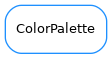

ColorPalette¶

-
class
ColorPalette(dat, int_decoder_dict=None)[source]¶ Bases:
objectProvides the list of taurus colors equivalent to Tango colors.
-
hex(stoq, fmt='%06x', fg=False)[source]¶ Returns the rgb colors as string of lowercase hexadecimal characters
-